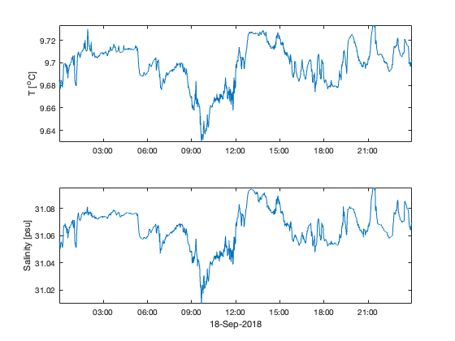

Lab 3: Intro: MATLAB structures and ONC data
Contents
Objective
The objective of this lab is to continue using the MATLAB computer program and to help you understand how MATLAB processes time data. You will also get a brief introduction to data available from the Ocean Networks Canada VENUS project in Saanich Inlet.
Source
You should be able to open and edit the file that made this html document. From within MATLAB, open Lab3.m. Do not just double-click the file from an Explorer window.
Commands we will use
load, end, max, mean, now, datestr, datenum, plot, ylabel, datetick, xlabel, subplot, save, print
1. ONC / VENUS data
We'll now switch to looking at a set of data from the Ocean Networks Canada VENUS project from 18 Sep 2018 that I have downloaded for you. Later in the lab, you'll download your own data!
We will be looking at the temperature, salinity and pressure for 18 Sep 2018 from the VENUS station in Saanich Inlet. Note: The mat files you will be working with have been downloaded for you from the Ocean Networks Canada website http://oceannetworks.ca/
VENUS provides data in a MATLAB format called a structure. We will be using structures extensively to provide data to you. Structures are a way of packaging data into a saved data file. Below, data is the structure and it contains many pieces of information, including data and quality control flags. There is another structure, metadata, which contains information relating to the sensor that acquired the data.
The definition of a structure from MATLAB:
Structures: Arrays with named fields that can contain data of varying types and sizes. A structure array is a data type that groups related data using data containers called fields. Each field can contain any type of data. Access data in a structure using dot notation of the form structName.fieldName.
The are two main pieces of information in the ONC data structures that we will be working with:
- dat: this corresponds to the sensor measurements. In the case of the data I have downloaded for you, this is either temperature or salinity.
- time: the timestamps that correspond with each value in dat
Let's first take a look at the temperature data for 18 Sep 2018 from the VENUS station in Saanich Inlet (~96 m depth).
clear %all previous variables are now cleared from memory. load('PatriciaBay_SaanichInletVENUSInstrumentPlatform_variables_SeaWaterTemperature_20180918T000001Z_20180918T235901Z-NaN_clean')
Have a look at your workspace window. You now have two entries: data and metadata. Both are structures. Notice the icon, and also the Value: 1x1 struct.
To see what is packaged inside the structure, you can simply type data at the command prompt.
data
data =
struct with fields:
sensorID: 21115
sensorName: 'Temperature'
sensorCode: 'Temperature'
sensorDescription: 'Temperature: sea water'
sensorType: 'Sea Water Temperature'
sensorTypeID: 8
units: 'C'
isEngineeringSensor: 0
sensorDerivation: 'Not Derived'
propertyCode: 'seawatertemperature'
isMobilePositionSensor: 0
deviceID: 23956
searchDateNumFrom: 737321
searchDateNumTo: 737322
samplePeriod: 60
samplePeriodDateFrom: 7.3732e+05
samplePeriodDateTo: 7.3732e+05
sampleSize: 1
resampleType: 'No resampling'
resampleDescription: 'No resampling'
resamplePeriod_sec: NaN
resampleTypeID: NaN
dataProductOptions: 'Data Gaps: Fill missing/bad data with NaNs (Not a Number). Quality Control: Clean Data (replace data that fail QAQC checks).'
qaqcFlagDescription: 'QAQC Flag: 0 = no test; 1 = passed all tests or is a manual pass - good; 2 = failed at least one minor test (location-based levels) - probably good; 3 = failed at least one location-based special test - probably bad; 4 = failed at least one instrument or global/observatory test or manual fail - bad; 6 = Insufficient valid data for reliable down-sampling - bad; 7 = Averaged value - passed all tests - good; 8 = Interpolated value - passed all tests - good; 9 = Filled data gap - missing value (NaN). See metadata and documentation for more information.'
time: [1440×1 double]
dat: [1440×1 double]
qaqcFlags: [1440×1 int8]
dataDateNumFrom: 7.3732e+05
dataDateNumTo: 7.3732e+05
samplesExpected: 1440
samplesReceived: 1440
Calibration: [1×1 struct]
Notice how much information is packed inside that structure! There are 32 different fields, some of which are just information (e.g. data.units), and some of which contain numbers...
What is the timestamp on the first data point in the data set?
datestr(data.samplePeriodDateFrom)
ans =
'18-Sep-2018 00:00:01'
All datasets downloaded from Ocean Networks Canada will have this same format and will follow the same naming conventions. We can tell what data is in the file by looking at data.sensorName and the data can be found in data.dat
Let's look at the first three values of data.dat
data.dat(1:3)
ans =
9.6842
9.6830
9.6804
These are temperatures, and the units are found in data.units ('C'). What about the first three values of data.time?
datestr(data.time(1:3))
ans =
3×20 char array
'18-Sep-2018 00:00:01'
'18-Sep-2018 00:01:01'
'18-Sep-2018 00:02:01'
Now let's load the salinity data file.
load('PatriciaBay_SaanichInletVENUSInstrumentPlatform_variables_Salinity_20180918T000001Z_20180918T235901Z-NaN_clean') % units are PSU
NOTE: we still only have two structures in the workspace! Because all of the ONC data has the same naming convention, every time you load a datafile you will OVERWRITE the old data. Thus, since we are working with multiple measured parameters, we need to load the data for the measurement of interest, make a copy of the data we want to use, before loading the next data file.
To make a copy of the data we want to use, first we load the structure
load('PatriciaBay_SaanichInletVENUSInstrumentPlatform_variables_SeaWaterTemperature_20180918T000001Z_20180918T235901Z-NaN_clean'); % units are deg C
Then we pull the data out of the structure by making new arrays called time and temp:
time=data.time; temp=data.dat;
This way, when we load the next ONC datafile, we will still have the temperature data available in our workspace. Another advantage to this is that we are also essentially creating a shortcut... For example, time is much shorter to type than data.time, but they both now contain the same values.
Next, we can re-load the salinity data file, and copy the salinity data into a new array called sal:
load('PatriciaBay_SaanichInletVENUSInstrumentPlatform_variables_Salinity_20180918T000001Z_20180918T235901Z-NaN_clean'); % units are PSU sal=data.dat;
NOTE: I've only made one copy of the time data since I know all these files have exactly the same time information. I specified that I wanted all files to start at midnight on 18 Sept and continue until midnight on 19 Sept. Each data file has 1440 entries - that's 1 sample per minute for 24 hours.
2. Subplots - a way to visualize data on the same timescale
Since we know these data have the same time scale, let's plot them with one right above the other, so the two x-axes line up exactly. We can do this using subplots.
From the MATLAB documentation: subplot(m,n,p) divides the current figure into an m-by-n grid and creates an axes for a subplot in the position specified by p. MATLAB® numbers its subplots by row, such that the first subplot is the first column of the first row, the second subplot is the second column of the first row, and so on.
Let's create a set of time series plots with both variables (T,S) against time. We want to make sure to label all appropriate axes and try to make our plot as "readable" as possible.
figure (3) % opens a figure window clf % clears the contents of the current figure window %Define a plot space - there will be two rows, one column, and this will be the first plot subplot(2,1,1) plot(time,temp) datetick('x',15) % what do the inputs on datetick mean? ylabel('T [^oC]'); % what does the "^" symbol in this expression do? axis tight subplot(2,1,2) % What plot does this specify? plot(time, sal) datetick('x',15) ylabel('Salinity [psu]'); xlabel(datestr(datenum(time(1,:)),1)) % what does "datestr" do? axis tight
3. How do I download my own data from ONC?
I've provided you with two data files - containing temperature and salinity. But I'd like you to look at four properties - T, S, DO, and P.
Go to https://data.oceannetworks.ca/DataSearch
In the Sort by dropdown menu, select Properties By Location.
Navigate to: Pacific > Salish Sea > Saanich Inlet > Patricia Bay > Saanich Inlet VENUS Instrument Platform > Pressure
Then click the RED Select Data Product link over on the right side of your screen.
We want the Pressure data, in MAT 7 format.
Enter the time range of interest:
Date From (UTC): 18-Sep-2018 00:00:00
Date To (UTC): 19-Sep-2018 00:00:00
You have 9 different options for the format of your data, sorted into 3 groups. We want to download data from the Time Series Scalar Data group. There are 4 options: .csv, .mat, .txt, and .json. We will use MATLAB, but you may wish to use a .csv file if you want to use Excel for example.
There are also Time Series Scalar Plots that are plots made by VENUS, either as a png or pdf file. These plots are good if you just want a quick graphical view, but if you actually want to examine the pressure data, you'll need to choose one of the data formats.
Under the Time Series Scalar Data, choose MAT 7, the MATLAB Version 7 .mat file.
Click the red Add to Cart, and then click Next, then Checkout All.
The file will be generated for you (wait a minute or two!) and a link will show up on the right of the page. We want the .mat file, not the Metadata (though that's interesting, too.) Click on the file name and download it to your computer. Put it into a directory that you can find and rename it to something that makes sense to you. I'll use SepP.mat for mine. Make sure you keep the .mat extension.
ASSIGNMENT
Part 1: Subplotting Figures
Go to the ONC site and download oxygen and pressure data sets to match the times of the temperature and salinity already provided. (see instructions in Part 3 above).
Make a set of subplots from the Saanich Inlet VENUS Instrument Platform data for 18 Sep 2018 (i.e. the data files from section 1). Your subplots should contain the temperature data, salinity data, oxygen data, and pressure anomalies plotted versus time. Make sure to label all appropriate axes and try to make your plot as "readable" as possible. Insert your figure into a Word document. Add a caption to the figure describing the subplots and where the data came from (i.e. Figure 1:....). Be sure to include a sufficient amount of detail here - where are the data coming from? what depth? Define any abbreviations or simple calculations you have done. Don't use title for this - there's not enough room to write a good figure caption. Rather, add the text in Word.
Below the figure, answer the following questions about the data:
Q1. Go online and find information about the Ocean Networks Canada Saanich installation (the ONC website is a good place to start). Describe the location/environment of the Saanich Venus Instrument Platform, highlighting the node we are using in Patricia Bay and how it relates to the bathymetry of Saanich Inlet. Be specific - describe the location of the platform in Saanich Inlet. Do you think data obtained from the Patricia Bay node is representative of the conditions in the whole of Saanich Inlet? Why or why not?
Q2. Look at the pressure anomaly data. What signal are you seeing in these data/what does the variation in the data represent? Describe the curve. What is the range of these data; the period? Remember - these data are obtained by a stationary CTD mounted to the bottom of the ocean.
Part 2: Code
Below your answers to questions 1 and 2, put a copy of the code you used to produce your figures. You can just cut and paste your code into Word.
NOTE
You will be marked on 1) your answers to the questions; 2) the appearance of your figures - do they tell a story, and tell that story well?, 3) your ability to follow directions; and 4) the elegance of your code. Keep things neat and organized. Use % to make comment lines to explain what you are doing. Use the semicolon ; after commands to supress unnecessary output. Make sure you follow the file name conventions I've asked for.
You need to hand in 1 file to the Lab 3 assignment dropbox on Brightspace:
- Lab3Yourlastname.doc : a WORD document containing your figure, the answer to questions 1-2, and a copy of the code you used to produce your figures. (Just cut and paste your code into Word).